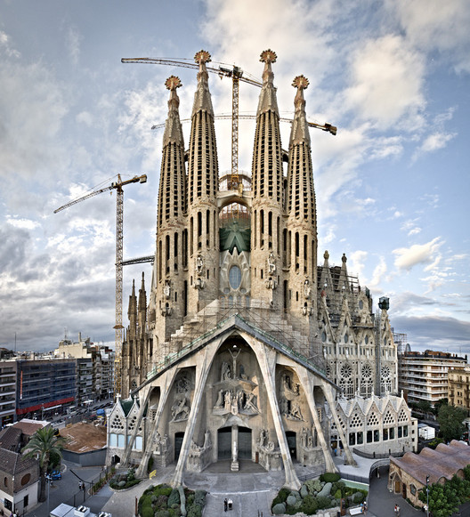
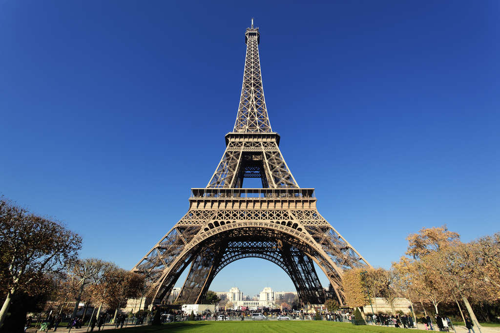
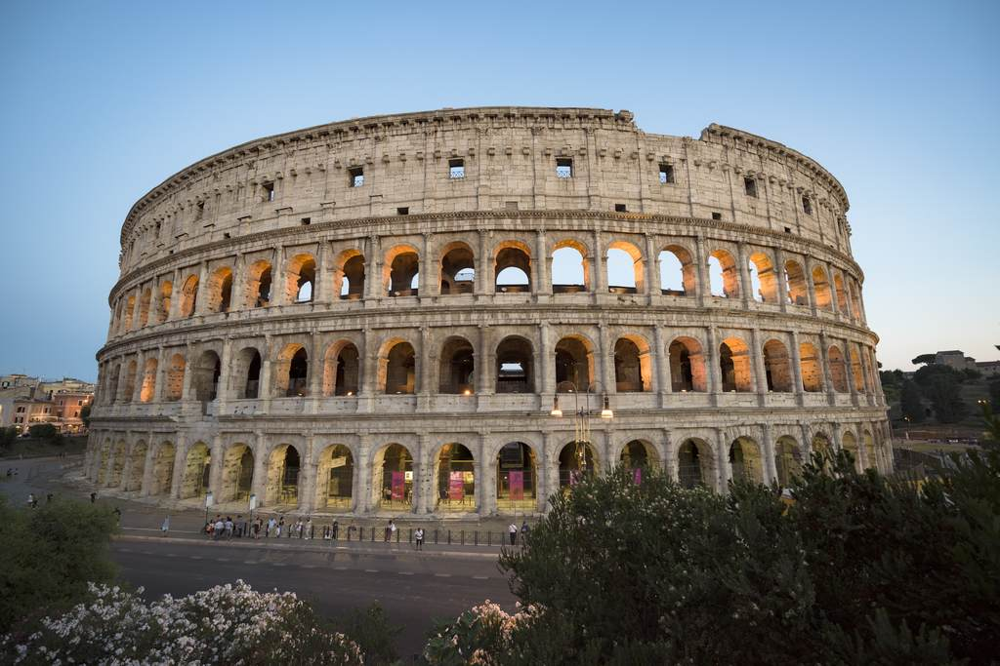

Bem-vindo a EuroTour
Sobre nós
EuroTour é um site que ajuda você a planejar sua viagem para a Europa, desde a compra das passagens, até a visita aos pontos turísticos mais importantes de cada região. Confira abaixo alguns pontos turísticos
EuroTour é um site que ajuda você a planejar sua viagem para a Europa, desde a compra das passagens, até a visita aos pontos turísticos mais importantes de cada região. Confira abaixo alguns pontos turísticos
A Sagrada Família de Barcelona, Espanha, foi construída pelo famoso arquiteto Antoni Gaudì. Ela é uma igreja com enorme quantidade de detalhes que ainda não foi finalizada. A igreja está em construção há 135 anos e deve ficar pronta em 2026. Entretanto, é possível visitá-la e conhecer o seu interior.

A Torre Eiffel é um ponto turístico obrigatório em Paris, França. A sua construção foi em 1889 para celebrar os 100 anos da Revolução Francesa, e tem 325 metros de altura e 1.665 degraus. Além de uma vista incrível que pode ser apreciada de diferentes maneiras, há vários restaurantes em torno da Torre Eiffel para aproveitar a culinária do país. Devido à espera de pelo menos duas horas para conhecer a Torre, recomendamos comprar a entrada com antecedência.

O Coliseu de Roma ou Anfiteatro Flaviano é um dos principais pontos turísticos da Itália e um dos monumentos mais famosos do mundo. Com uma construção que se iniciou no ano de 72 d.C e serviu como palco para gladiadores que lutavam entre si, ele atrai pelo menos 4 milhões de turistas todos os anos. O Coliseu de Roma tinha capacidade para 70 mil pessoas e oferecia espetáculos para distrair a população. Devido à quantidade de turistas que costumam visitar o local, recomendamos que garanta o seu ingresso para o Coliseu com antecedência e evite filas.
